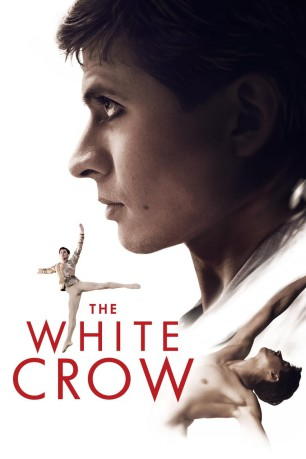
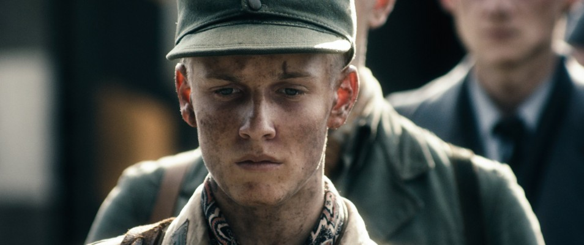
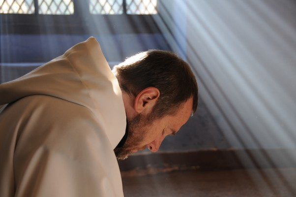
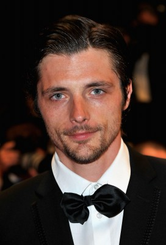
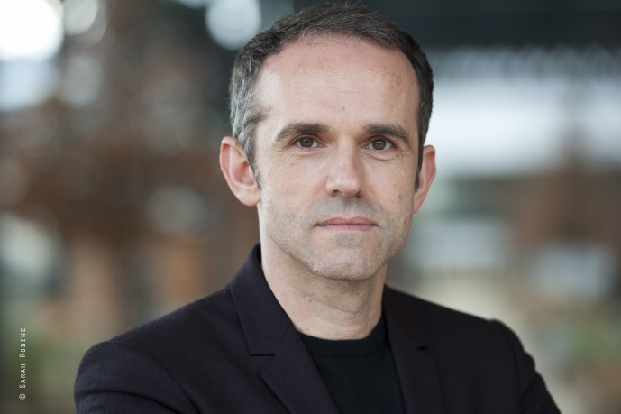
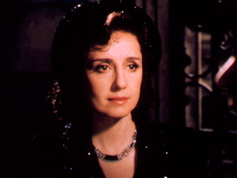

#11843 Nurejew: The White Crow
Alternativ: The White Crow (Englischer Titel)
 
 IMDB-Wertung: 6.5 / 10
IMDB-Wertung: 6.5 / 10  Metascore: 61
Metascore: 61 
Der berühmte russische Balletttänzer Rudolf Nurejew wird in den 1950er Jahren zum Star. Da er das Leben in der Sowjetunion nicht länger ertragen kann, plant er seine Flucht in den Westen.
BDRIP MIC
Jahr: 2018
Dauer: 127 Minuten
FSK: 6
Land: England Studio: Alamode FilmTonspuren:
Untertitel: Englisch,
Auflösung: 1080p (1920x1040) Größe: 11059 MB
Genre: Drama, Biographie
Regisseur:  Ralph Fiennes
Ralph Fiennes
Drehbuch: David Hare, Julie Kavanagh
Soundtrack: Ilan Eshkeri
Darsteller:
- Oleg Ivenko als Rudolf Nureyev
 Ralph Fiennes als Pushkin
Ralph Fiennes als Pushkin-  Louis Hofmann als Teja Kremke
- Adèle Exarchopoulos als Clara Saint
- Sergei Polunin als Yuri Soloviev
-  Olivier Rabourdin als Alexinsky
-  Raphaël Personnaz als Pierre Lacotte
- Chulpan Khamatova als Xenia
- Zach Avery als Michael Jones
 Mar Sodupe als Helena Romero
Mar Sodupe als Helena Romero- Nebojsa Dugalic als Konstantin Sergeyev
-  Yves Heck als Jagaud-Lachaume
- Anastasiya Meskova als Alla Osipenko
- Charlie Wright als Journalist
- Arnaud Humbert als Journalist Le Figaro
- Yann Bean als Well Wisher
- Nadezhda Markina als Bureaucrat
- Andrey Urgant als Nicolai Ivanovsky
- Jonathan Zaccaï als Serge Lifar
- Ravshana Kurkova als Farida Nureyev
- Kseniya Ryabinkina als Anna Ivanovna Udaltsova
- Yelena Trepetova als Kirov Tour Manager
- Milutin Milosevic als Osipenko's Lover
- Tamara Krcunovic als Journalist
-  Nicoletta Braschi als Claire's Mother
- Antonio Scarpa als Renaissance Dancer
- Calypso Valois als Claire Motte
- Aleksey Morozov als Strizhevsky
- Igor Filipovic als Trofimkin
- Jovo Maksic als Romanov
- Anna Urban als Natalia Dudinskaya
- Angelina Debor als Ljuba Romankov
- Dmitriy Karanevskiy als Leonid
- Jean-Baptiste Demarigny als Journalist
- Radoslav 'Rale' Milenkovic als Shelkov
- Margaryta Cheremukhina als Irina Kolpakova
- Pavle Cemerikic als Jean-Pierre Bonnefoux
- Vitaliy Kovalenko als Interrogator
- Frano Lasic als Russian Waiter
- Vladimir Nikitin als Hamet Nureyev
- Konstantin Kostjukov als Korkin
- Greg De Cuir als 2nd Journalist
- James Owen als Journalist
- Paul Leonard Murray als Journalist
- Stanislava Jeftic als Nain Bleu Sales Assistant
- Juliette Armanet als Chanteuse
- Kira Sinelshikova als Female Housekeeper
- Stephane Moissaing als Gendarme
- Sébastien Siroux als Patron
- Anna Stanic als Waitress
Datei: X:\2018(N-Z)\Nurejew The White Crow (2018, FSK6, 1920x1040).mkv seit 01.10.2019
Festplatte: HD 2018(G-Z)-2019(A-Z)
 Es gibt insgesamt 172 Filme in der Gruppe '2018(N-Z)'
Es gibt insgesamt 172 Filme in der Gruppe '2018(N-Z)'